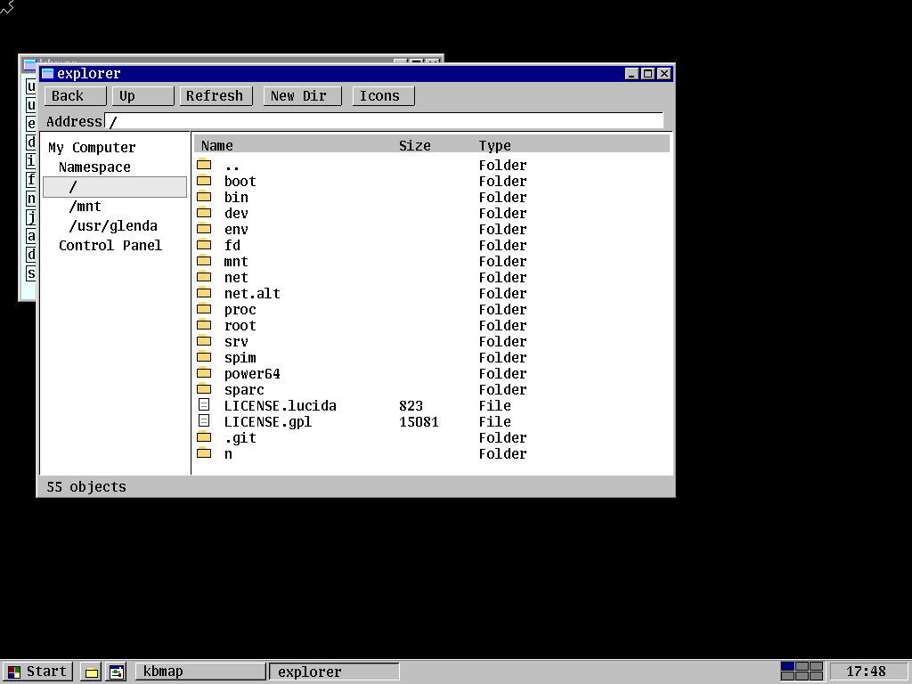

Bootable kernel, userland, and graphical profile in the TaijiOS tree.
Plan 9 desktop OS
TaijiOS
A bootable desktop OS tree based on Plan 9, tuned for fast local QEMU runs and prepared for a browser-hosted WASM demo.

Browser boot uses a WASM x86 emulator and the TaijiOS web boot image.
Serve this page over HTTP, then start the emulator.
Local boot
Run the native VM while the web image matures
TaijiOS already boots from this repository through QEMU. The local path shares the checkout as the root filesystem, so editing files on the host is immediately visible inside the VM.
./q9
./q9 --text
./q9 rill
The website stages a mini raw image for v86 and keeps QEMU-specific host mounts out of the browser path.
GitHub Actions builds the static artifact and deploys when Netlify secrets are present.